用局部 Shapley 值给出逐位置通道归因矩阵
SSI 在每个空间位置固定观测上下文，只对该位置的通道做 Shapley 分配，输出完整的 (g,c) 归因矩阵。
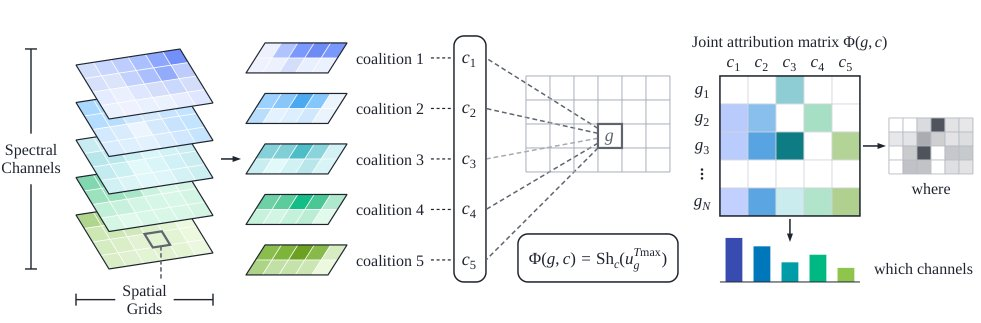
SSI 总览：对每个空间位置 g 固定观测到的周边上下文，把局部贡献分配给该位置的各通道，从而得到可用于空间与光谱解释的完整联合归因矩阵 Φ(g,c)。
解决了什么问题。现有的后验图像解释大多只回答「模型看哪里」：Grad-CAM、RISE 一类方法在通道上聚合，得到单张空间热图；而 SHAP、互信息一类通道归因又把通道重要性在空间上平均，给出全局波段排序。对多光谱数据这不够用，因为同一波段在一个区域可能起决定作用、在另一个区域却无关；把热图乘上全局通道向量，等于假设归因矩阵是秩 1 的，在鸟类羽毛或遥感场景中往往不成立。
方法。SSI 把位置与通道的组合 (g,c) 当作玩家，对每个空间位置 g 固定其余位置的观测值作为上下文，只在 g 处的通道上定义一个条件博弈 w_g，再对这个小型博弈取标准 Shapley 值，得到全网格的 Φ(g,c)。论文证明了两条性质：在每个位置内部满足 Shapley 公平性（效率、对称、零玩家、可加性）；并且对通道求和恰好等于把整个位置替换为基线时的全上下文对比 Δ(g)。它与 Owen 值使用相同的位置—通道分组，但 Owen 要在外部空间联盟上取平均，SSI 只条件于实际观测到的上下文。
关键结果。在 CUB-200、EuroSAT 和 HLS Burn Scar 上，无论用逐通道均值基线还是零基线，SSI 的联合删除 AUC 和插入 AUC 都优于 dense（IG、DeepSHAP）、flat（KernelSHAP）和秩 1（RISE）基线。CUB-200 均值基线下插入 AUC 为 .7132，高于 RISE 的 .6886，而 RISE 用了 8,000 个空间掩码、SSI 为 2048 次前向；HLS Burn Scar 均值基线下联合删除 AUC 为 .1545（IG 为 .2160），对 MC-Owen 为 .155 对 .173，前向评估最多 4,480 次对 76,800 次，约 6% 预算。空间定位上 HLS Burn Scar Top-10% 覆盖的 mIoU 为 .389，DeepSHAP 为 .277、RISE 为 .191；ROAD 评测中 LeRF AUC .657、MoRF AUC .1143，在九种方法中最好。
为什么值得看。对 Sentinel-2、HLS 这类波段带物理含义的影像，解释需要同时说明证据位于哪个区域、由哪些波段支撑，而 SSI 给出的正是这种可分解到位置—波段的归因，并且通道求和有明确的上下文对比含义。它也为「热图 × 全局波段向量」这一常见做法的不足提供了一个可检验的反例：秩 1 投影后删除 AUC 明显变差。
局限 / 存疑。条件博弈的语义依赖掩码基线的选择（逐通道均值或零），论文自己也承认这是所有扰动式归因的固有问题；Proposition 1 进一步表明，位置级上下文聚合性与全局效率无法同时保证，因此 SSI 不分配整个预测值。采样方面每格最多 K=10 次通道排列，作者指出对数百个相关波段的高光谱传感器可能需要先做通道筛选或自适应分组，这仍是未来工作；而「约 6%」只是前向次数口径下的比较，不是实测耗时，也不能与梯度法的反向传播成本直接对比。
模型可解释性、模型内部机制
计算机视觉 CV
alphaXiv · arXiv
用编码智能体合成电脑使用环境与可验证任务
论文提出两阶段合成流水线，自动生成带 GUI、MCP、CLI 接口的电脑环境与跨接口任务，并用五道质量门筛选。
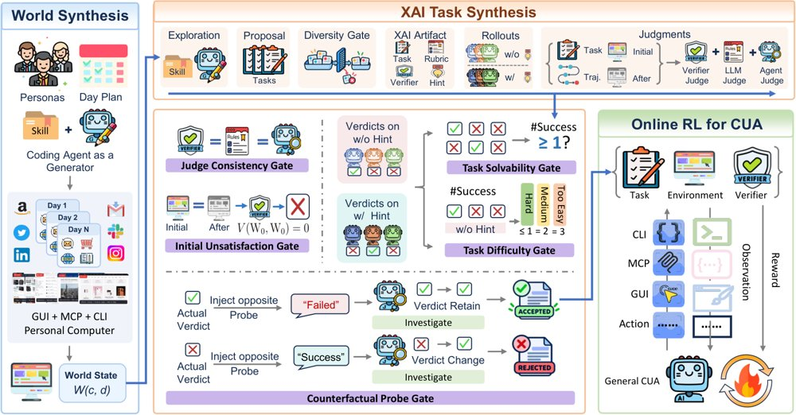
合成流水线分两步：先用编码智能体构建人物驱动、跨多天、同时提供 GUI、MCP 与 CLI 接口的电脑环境状态，再经五道质量门生成跨接口任务，输出可供训练通用电脑使用智能体的 {任务, 环境, 验证器} 三元组。
解决了什么问题。智能体训练的重心正从「学习人类数据」转向「在环境中交互学习」，但环境供给成了瓶颈：在真实电脑系统里做强化学习成本高、状态难重置、线上服务还会变化，探索性操作可能带来安全后果。手工搭建环境虽可控可验证，却昂贵且难以规模化。已有的合成流水线多针对单一交互方式（浏览器、工具调用、终端），且常把每个应用做成相互隔离的简化环境，与真实电脑使用中网站、应用、MCP 服务与本地文件共存的形态不符。
方法。方法分两个阶段。第一阶段是世界合成：用编码智能体构造由人物设定驱动、跨越多个「天」的环境状态，这些状态同时暴露 GUI、MCP 与 CLI 三类接口，形成可执行的个人电脑工作区。第二阶段是跨接口任务合成：围绕可解性、难度与验证器可靠性设计五道质量门来生成任务，其中包含回放确定性检查——从第 N-1 天的同一状态重放 delta.sh 两次，两个世界必须产生完全相同的内容哈希。最终产出 {任务, 环境, 验证器} 三元组用于训练通用电脑使用智能体。
关键结果。论文报告合成了 341 个跨接口（XAI）任务。主结果表中平均分为 53.42，并标出 +10.58 的平均提升；表中各方法分数从 21.73 到 80.77 不等。作者强调的发现之一是「广泛的分布外泛化」。至于合成了多少个环境、训练与合成各花费多少算力，论文未给出具体数字。
为什么值得看。如果环境与验证器能自动合成，强化学习所需的环境供给就有望从手工搭建转为规模化生成，从而绕开在真实电脑系统上训练的成本与安全风险。
局限 / 存疑。目前公开的规模只有 341 个任务，相对真实电脑使用场景仍偏小；五道质量门中的回放确定性仅以内容哈希一致作为判据，能否代表任务语义上的确定性存疑，验证器可靠性也仍依赖自动筛选而非人工审核。此外，材料中未给出从合成环境到真实系统的迁移证据，也没有与真实世界训练的成本对比，具体环境数量与算力开销论文未给出具体数字。
AI 智能体 Agent / 自主智能
alphaXiv · arXiv
35B智能体Sage-A1.5：学会分工与验证
上海AI Lab发布35B MoE智能体Sage-A1.5，把子任务并行委派与过程验证纳入训练，多项基准超过前代A1。
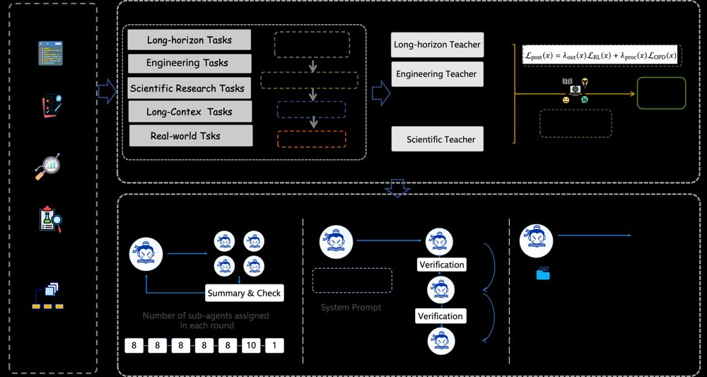
图：Sage-A1.5的三阶段训练流程——先以多领域数据、环境构建、轨迹筛选、分阶段SFT和RL训练出多领域教师，再经统一的结果-过程后训练得到统一模型，支持智能体编排、迭代验证与本地部署。
解决了什么问题。此前Agents-A1通过扩展智能体执行长度而非参数规模，在35B MoE上提升长程任务表现；但复杂软件工程、机器学习优化和科研任务还要求管理子任务、比较方案并随证据修改决策。单智能体逐步执行会遭遇上下文增长、探索缓慢和错误累积，长执行也不必然更好：可能重复无效搜索、基于未验证假设推理或过早接受结论。
方法。Sage-A1.5把执行组织作为训练目标：主智能体学习拆分任务、向隔离上下文的并行子智能体委派，并整合探索性或构造性组合的结果；同时学习在进度停滞或关键结论处自主核查证据、修正策略，推理时不依赖外部监督器或专用验证工具。训练上先做多领域SFT，再用统一的结果奖励RL与多教师on-policy蒸馏进行结果-过程后训练，合并搜索、编码、科学和真实工作流能力。
关键结果。表1中，Sage-A1.5的GAIA为95.1、BrowseComp为81.7、XBench-DS-2510为92.0、MLE-Bench-Lite为65.2、SWE-Bench Pro为61.2、FS-O为81.0、FS-R为48.3、CMT为80.0、CritPt为20.0；前代A1对应为96.0、75.5、86.0、43.9、43.6、79.0、40.0、72.0、4.3。消融显示，启用Agentic Orchestration使BrowseComp从81.7升至82.8、DeepResearch Bench II从43.7升至47.5；Agentic Verification教师使BrowseComp从81.0升至85.5，配对比较中每任务输出token从23,245降至21,962、交互轮次从84.81降至82.14。ALE-CLI严格通过率为19.1%，低于Kimi-K3的27.6%、GLM-5.3的28.5%和GPT-5.6-sol的28.6%；MatTools为42.6，低于A1的47.1。
为什么值得看。意义在于把分工与验证从外部脚手架规则变成可训练能力，让35B级开源模型在长程工程与科研任务上有可复现的路线；本地量化和可检查产物也利于隐私敏感与离线部署。
局限 / 存疑。论文承认，当前编排与验证训练仍集中在搜索与研究综合，超长轨迹会累积上下文开销，统一模型也未完全保留各领域教师的峰值表现；科学展示仍限于计算模拟和历史数据回放，而非真实物理实验。外部基准上，ALE-CLI 19.1%仍落后于三家更大模型，MatTools 42.6也低于A1的47.1，说明通用专业工作流和材料工具使用仍有短板。
基础大模型 & 基础模型底层研究
AI 智能体 Agent / 自主智能
alphaXiv · arXiv
教与练交替：让智能体技能真正可迁移
让教育者在学生实操中途插话指导：主队列效用由0.723升至0.801，教育者token减少61.7%。
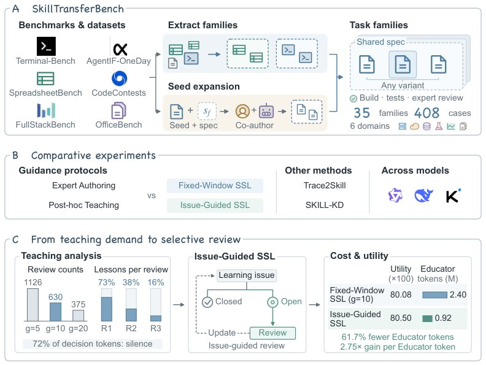
研究总览：(A) 由六个源基准构建任务族，(B) 采集协议比较、外部方法与模型配对，(C) 从教学需求到问题引导式审阅的路径及其效用与成本。
解决了什么问题。Agent Skill 能让 LLM 智能体的任务知识跨会话复用，但要习得可迁移的技能，学习者必须弄清「哪些步骤可复用、在什么条件下适用、何时需要调整」，而一次成功的任务尝试往往并不会检验这些前提。现有方法多做轨迹蒸馏或失败后的追补反馈，学习者该验证哪些假设、该追查哪些失败，仍是盲点。
方法。作者提出 Socratic Skill Learning（SSL）：学生模型独占环境操作权与 Skill 撰写权，教育者只读观察近期工作与当前 Skill 包，可以解释、质疑、诊断、提议检查或保持沉默，学生则可质疑、实测、改写或拒绝建议。Fixed-Window SSL 每隔 g 个工具调用触发一次审阅；Issue-Guided SSL 则维护一棵持久化的「学习问题树」，记录待解问题与验收标准，只在问题新开、变化或重开时聚焦审阅。作者同时构建 SkillTransferBench：35 个任务族、408 个可执行用例，跨六个领域，每族给出公开的族规格与留出用例，用全新会话的求解器测试冻结后的 Skill 包。
关键结果。在 Qwen 主队列（22 族、155 个留出用例）上，Fixed-Window SSL 取得 0.801 效用，无 Skill 为 0.723，适配版 Trace2Skill 为 0.761，适配版 SKILL-KD 为 0.751；相对 Trace2Skill 高 3.99 个百分点（95% 配对族自助法置信区间 [1.45, 6.49]），相对 SKILL-KD 高 4.99 个百分点。全通过率从 32.50% 升至 49.49%（Fixed-Window）与 50.82%（Issue-Guided）。Issue-Guided SSL 达到 0.805 效用，同时减少 61.7% 的教育者 token 和 16.9% 的总采集 token（每轮 6.89M 降至 5.72M），每教育者 token 的迁移增益为 Fixed-Window 的 2.75 倍；审阅次数减少 47.8%，单次审阅 token 减少 26.7%。在 DeepSeek 与 Kimi 的 10 族共享子集上，两种交替协议同样排名前二，教育者 token 分别减少 63.8% 与 77.4%。
为什么值得看。它把「技能采集」从离线的轨迹蒸馏改成在线的教与练交替，并给出一个可测量留出迁移的基准，说明监督信号何时插入比插入多少更关键。对需要控制专家模型调用成本的智能体技能流水线，问题驱动的选择性审阅提供了一条可操作的降本路径。
局限 / 存疑。作者自述实验在统一的单锚点设定下比较完整协议，尚未拆解教育者、审阅时机与问题结构各自贡献多少；跨模型结果也不一致，DeepSeek 上 Issue-Guided 虽省教育者 token，但学生 token 增加 39.2%，总采集 token 反而上升，成本优势并非普遍成立。过程分析（教学与写作/修订的关联）本质上是观察性的，不能作为因果结论。
AI 智能体 Agent / 自主智能
alphaXiv · arXiv
跨执行框架训练：智能体RL的新扩展维度
把智能体执行框架拆成五个可变换组件，用正交设计选18种配置做强化学习训练，显著提升对未见框架的泛化。
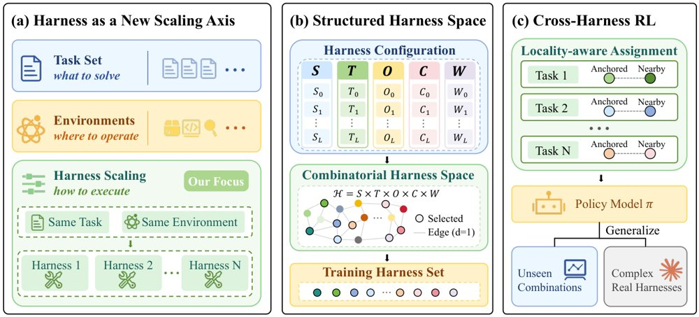
Harness Scaling 流程概览：从结构化框架空间的构建，到跨框架训练，再到对未见配置的泛化评估。
解决了什么问题。现有智能体强化学习大多只在单一固定执行框架（harness）下优化策略，容易专门化到特定的工具接口、上下文管理和工作流，一旦更换框架，性能就容易下降。此前关于扩展的研究主要集中在任务扩展和环境扩展，关注「解什么问题」和「在哪里执行」，很少把「怎么执行」当作独立的扩展维度。
方法。作者把 harness 分解为系统提示、工具接口、观测、上下文管理、工作流五个组件，每个组件实例化三种实现，构成 3^5=243 个完整配置的组合空间，并以汉明距离定义配置间的结构邻近性。随后用 strength-2 正交设计从中选出 18 个配置组成训练集：每个组件的每种实现各出现 6 次，任意两个组件的实现组合恰好出现 2 次。训练时每个任务随机抽取一个锚点配置，再取与之汉明距离最近的 K=2 个配置，在同一任务上做跨框架 rollout，优化目标仍是标准的 PPO/GRPO 裁剪损失。
关键结果。在 Qwen3-4B-Instruct 上，18 个留出白盒配置的平均 Pass@1 相对单框架 RL 分别提升 +9.80（GRPO）和 +3.57（PPO）分，整体平均从 29.81 升到 39.04、从 33.91 升到 36.93；Qwen3-30B-A3B-Instruct 上分别提升 +5.21 和 +4.90 分，整体平均从 37.29 升到 42.78、从 36.31 升到 41.89。迁移到未见过的外部黑盒框架 Claude Code 时，两个模型分别取得 37.22 和 41.20 的平均分，高于经由 OpenClaw 训练的 black-box SFT（35.08 / 38.08）和 black-box RL（33.38 / 36.28）。消融显示，在 ClawGym-Bench 上，随机抽取 18 个配置为 47.90/42.78，按本文方法选出的 18 个配置为 52.78/45.37（In-Space/Claude Code）；把邻近分配换成随机分配会掉 2.32/2.20 分；而在基础框架上仅下降 0.19 分。
为什么值得看。它把「执行方式的多样性」提出为一个可与任务扩展、环境扩展并列的智能体 RL 扩展轴，并证明收益取决于多样性如何组织——在固定预算下，穷举全部 243 个配置反而不及结构化的 18 个配置。
局限 / 存疑。实验只覆盖 Qwen3-4B 与 Qwen3-30B-A3B 两个模型、ClawGym-Task 一个训练集，框架变体由 Opus-4.7 自动生成且仅 5 维 3 档，结论能否外推到更复杂的真实 harness 尚未验证；黑盒对比中的 SFT/RL 基线只基于 OpenClaw 单个黑盒框架，行为分析用 GPT-5.4 作评判也带有主观性。
AI 智能体 Agent / 自主智能
强化学习 RL & 序列决策
alphaXiv · arXiv
用真实事件预测环境训练自我改进智能体
研究者提出 DeepEvolve，把真实事件预测当作可验证、非平稳的环境，让智能体在预测—结果—更新的闭环中递归自我改进
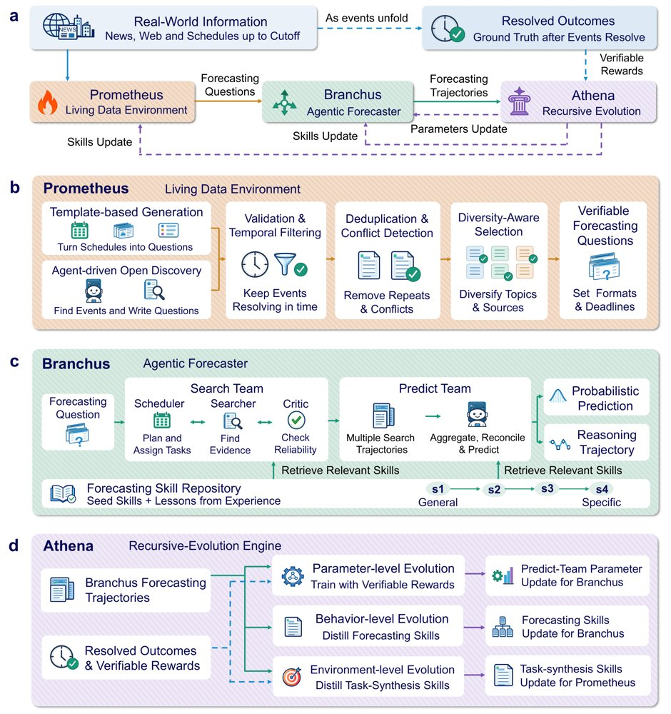
DeepEvolve 总览：问题生成（Prometheus）、预测（Branchus）与进化（Athena）构成闭环，已揭晓的结果提供可验证奖励并回流到后续轮次。
解决了什么问题。现有 AI 系统通常在发布时就冻结参数，只能依靠外部更新来变强；而理想系统应当能从自身经验中持续改进，作者称之为递归自我改进（RSI）。但研究 RSI 对研究环境的要求很高：环境必须不断提出新挑战，能无需人工介入就判断智能体是否进步，并且与现实世界自然对应。当前主流评测依赖的固定数据集并不具备这些性质，它们静止不变，既不更新挑战，也不自行判定进步。
方法。DeepEvolve 由三个模块构成。Prometheus 通过模板和智能体驱动的发现来生成问题，再经时间校验、去重、冲突检测和多样性感知选择。Branchus 把证据搜集与概率预测分开：由调度者、搜索者和批评者组成的 search team 负责对时间敏感的证据检索，predict team 则是时间不变的，只在缓存的证据与推理轨迹上推理；两个团队都会调用相关预测技能。Athena 使用缓存证据和可验证奖励更新 predict team 的参数，把搜索轨迹蒸馏成可复用的预测技能，并把观察到的弱点转化为任务合成技能，再回灌给 Prometheus。
关键结果。作者称 Branchus 在 Qwen3.8-Max 上取得 62.2 的 BT 分数，比表 1 中最强基线高 10.7；评测中，它与 Qwen3.8-Max、GPT-5.6-Sol、DeepSeek-V4-Pro、Claude-Opus-4.6 四个不同规模与厂商的模型配对，并与多类基线比较。作者还报告增益会累积而非饱和：智能体自身在线轨迹不断累积成技能池，蒸馏出的技能逐轮提升预测质量，而不是一次跳升后停滞；但材料中该图（图 6）论文未给出具体数字。技能被组织为从具体到抽象的四级层级（s4 逐字保留的流程、s3 对题型的一般化、s2 领域内一般化、s1 跨领域预测原则）。
为什么值得看。RSI 研究长期缺乏一个可以被反复刷新的试验场，而真实世界事件预测把“世界本身”当作评测集，其真值随时间揭晓、无法被人工构造，因此有可能成为智能体自我改进的可扩展环境。
局限 / 存疑。材料中没有独立的局限性章节；从设计看，这套递归改进高度依赖结果可客观验证，迁移到没有明确真值的领域是否成立尚不清楚。另外，主要增益目前只在 Qwen3.8-Max 上以 BT 单一指标给出，“逐轮累积提升”的具体幅度论文未给出具体数字。
基础大模型 & 基础模型底层研究
AI 智能体 Agent / 自主智能
alphaXiv · arXiv
多智能体技能演化：用组内对比定位该改谁的技能
同一问题跑 4 次团队执行，用组内相对优势把成败归到具体智能体—技能对；HotpotQA F1 83.7，比 MASki
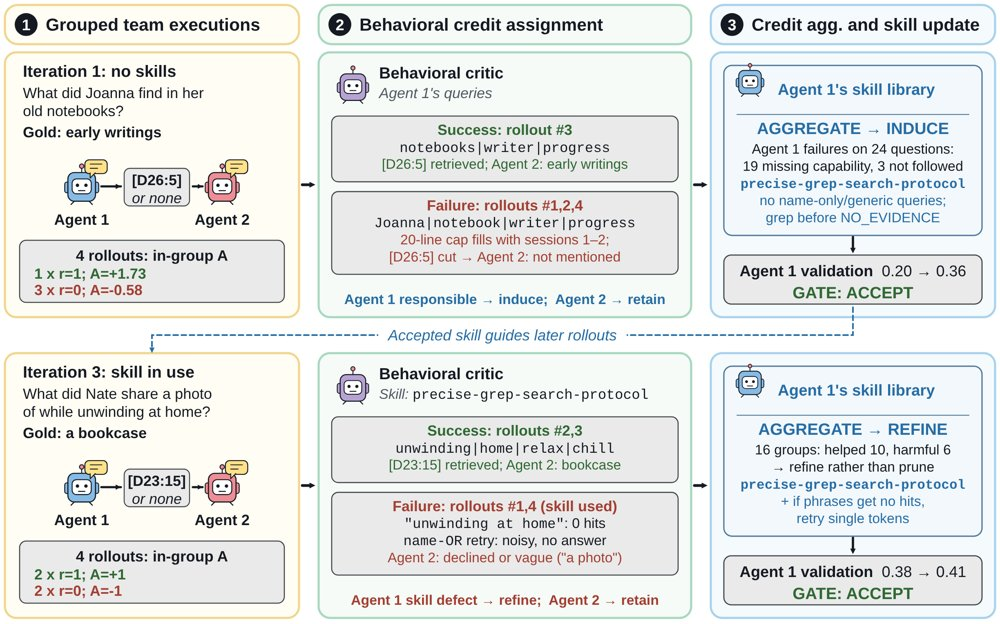
每轮迭代：（1）对每个问题采样一组团队执行；（2）对比这些执行给智能体—技能对记 credit，并以结构化形式诊断失败；（3）跨问题聚合 credit 成技能编辑，仅保留不降低验证分的改动。
解决了什么问题。多智能体团队只拿到一个共享的团队奖励，想靠修改自然语言技能来改进，就必须回答 credit assignment：哪个智能体的哪段行为决定了成败。现有技能学习方法按「技能是否出现在轨迹里」给 credit，于是一个在成功轨迹中同样出现的有害技能也会拿到正分。而且这类方法大多面向单智能体。
方法。GRSE 对每个问题在固定技能库下采样 G=4 次完整团队执行，按 GRPO 的归一化方式计算组内相对优势，把高、低优势执行之间的行为差异当作反事实基线。一个 critic 跨执行逐个智能体比较行为与交接，把 credit 落到智能体—技能对，并给出结构化诊断：8 类失败类型、经步骤存在性与奖励符号校验的失败/成功步骤引用，以及 refine、induce、no edit 的编辑动作。credit 按支持的问题数跨问题聚合（重复 rollout 不重复计数），再由 MASkills 的编辑算子生成候选技能库，经验证门只保留不降低验证分的更新。
关键结果。HotpotQA 上 GRSE 的 F1 为 83.7±0.5（Qwen3.8 作 actor），MASkills 为 80.6±0.6；换 Gemma4 作 actor 则是 82.8±0.4 对 82.3±0.2。LoCoMo 多跳类别提升 +6.7 F1（53.4 对 46.7）与 +5.3 BLEU，Gemma4 下为 +3.2 F1；时序类别在两个 actor 上均为最高（73.4 与 67.4 F1），但 open-domain（52 题）上 MASkills 更好。在植入有害技能的鲁棒性实验中，GRSE 对 5 个植入技能全部给出正确符号、两类技能效用分离 0.31（MASkills 错 2 个、仅分离 0.03），F1 从 60.6 恢复到 66.9，高于 MASkills 的 58.4。
为什么值得看。权重不动、只改自然语言技能，就能让协作智能体团队变强；把 credit 落到具体的智能体—技能对，使「改谁的技能」成为一个可引用步骤、可校验、可回滚的编辑动作，而不是笼统的整条轨迹反思。
局限 / 存疑。代价在训练算力：每问题 4 次 rollout 使 actor token 消耗达 MASkills 的 1.6–2.9 倍、wall-clock 1.3–1.8 倍（仅训练阶段，推理不变）。实验只覆盖两智能体顺序团队、两个问答基准与单一 critic，更大团队与非顺序通信未验证；且摘要称 LoCoMo 唯一未超过 MASkills 的类别是 open-domain、结论段却写成 multi-hop，这处不一致需要作者澄清。
AI 智能体 Agent / 自主智能
强化学习 RL & 序列决策
alphaXiv · arXiv
把循环变监督：DeLoop 减少智能体重复动作
DeLoop 把循环动作与其后的恢复动作组成偏好对，用 DPO 训练，在 CodeGym 上将 Qwen3-8B 循环率
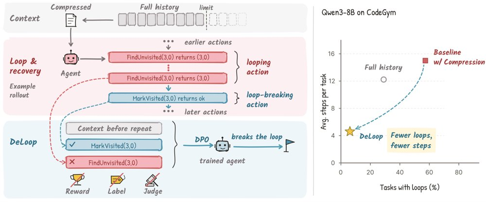
训练智能体识别自身循环可打破循环：左侧是重复搜索与其后 MarkVisited 组成的偏好对，右侧比较 Qwen3-8B 在 CodeGym 上 4096 token 摘要与完整历史的循环率。
解决了什么问题。长程智能体常重复已执行过的工具调用，拿回相同观察，浪费步骤与 token；历史压缩会显著放大这一问题。论文在 CodeGym 上报告，Qwen3-8B 的含循环任务比例从完整历史的 29.0% 升到 4096 token 摘要下的 57.3%，且含循环的运行更易失败。
方法。DeLoop 把一次循环动作作为负例，把同一 rollout 中之后第一个非循环且不同的动作作为正例，直接用 DPO 训练策略。配对只依赖动作与观察的结构匹配，不需要任务奖励、标准答案或 LLM 评审；作者在 Qwen3-8B 上用 8,000 个自挖掘 CodeGym 对做 LoRA DPO。
关键结果。在 CodeGym 的 4096 token 摘要设置下，Qwen3-8B 的循环率从 57.3% 降至 6.1%（9.4×），每任务步数从 15.00 降至 4.67，token 约降 47%，任务成功率从 25.1% 变为 25.9%。Qwen3-14B 成功率从 45.1% 升至 52.3%，Qwen3-32B 从 37.7% 升至 44.8%，循环率分别从 42.9% 降至 12.3%、从 38.5% 降至 12.9%。加入跨域配对的 DeLoop-Mix 将 8B 成功率从 25.1% 提到 30.3%，在 BrowseComp-Plus 上把循环率从 22.4% 降至 1.2%，准确率与未训练模型相当。
为什么值得看。它把失败轨迹本身变成无需外部标签的训练信号，为长程智能体的上下文压缩与策略修复提供互补思路，并直接减少重复工具调用与 token 消耗。
局限 / 存疑。循环被定义为同一工具调用返回字节级相同观察，近重复调用与更广泛的低效探索不计入；主要评测集中在 CodeGym，8B 上成功率仅从 25.1% 到 25.9%，且部分消融和跨环境结果仅单次运行。
AI 智能体 Agent / 自主智能
alphaXiv · arXiv
EvoSyn：用学习者反馈重塑合成空间
把数据合成与智能体训练连成闭环，让学习者表现反过来改写合成空间，两个智能体基准上平均任务成功率提升13.3个百分点。
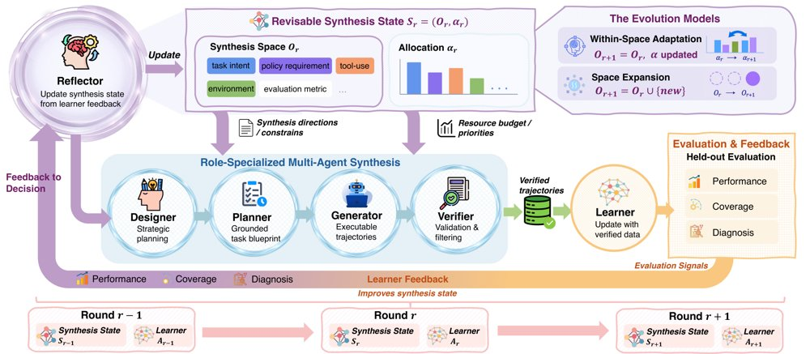
EvoSyn 总览：每一轮实例化一次「合成—学习」闭环，可修订的合成状态居中协调学习者诊断与生成控制，角色分工的智能体产出可验证经验，反馈则驱动空间内自适应或合成空间扩展，使合成与任务智能体共同进化。
解决了什么问题。面向交互式智能体的合成数据不只要可执行、可验证、符合领域策略，还必须对当前任务智能体具有学习价值。已有方法会引入环境反馈、数据校验或学习者失败案例，但仍存在「反馈到决策的缺口」：观测到的弱点并不能直接说明未来的合成应当如何改变，也无法判断现有合成空间能否表示这种改变。
方法。EvoSyn 把合成与学习组织成闭环 S_r→D_r→π_θr+1→F_r→S_r+1：每一轮用一个可修订的合成状态来连接学习者诊断与生成控制，并由角色分工的多个智能体分别承担其中的异质决策（作者称为决策抽象）。学习者反馈随后驱动两种动作——在现有合成空间内做自适应调整，或扩展合成空间本身，从而让合成过程与任务智能体在多轮中共同进化。
关键结果。在 τ²-Bench 与 CAR-Bench 上，EvoSyn 相比最强合成基线平均任务成功率提升 13.3 个百分点；为保证比较一致，所有合成方法的下游任务智能体均为 Qwen3-8B。附录的规模实验中，基座从 Qwen3-8B 扩到 14B、30B，平均成功率由 39.4% 升至 48.6% 和 57.1%，作者称仍有相当的后训练空间。论文材料未给出各基准分项的绝对数值，也未给出每一轮的具体增益。
为什么值得看。它把「合成什么数据」从一次性设计变成随学习者状态演化的决策问题，为智能体后训练提供了一种可复用的闭环范式，而不只是堆更多可执行轨迹。
局限 / 存疑。评测只覆盖 τ²-Bench 与 CAR-Bench 两个智能体基准，合成侧使用的是 Opus 4.5 这类强闭源模型，闭环轮数与总采样成本在材料中未给出，方法在更弱合成模型下是否仍成立尚不清楚。13.3 个百分点是跨基准平均值，分项提升与方差未见报告，30B 基座上也仍留有较大提升空间。
基础大模型 & 基础模型底层研究
AI 智能体 Agent / 自主智能
alphaXiv · arXiv
用社会动力学轨迹重铸LLM智能体团队角色
Agent Sociodrama让情绪与有向关系逐轮演化，并据轨迹重选人格，团队准确率最高提升83.3个百分点。
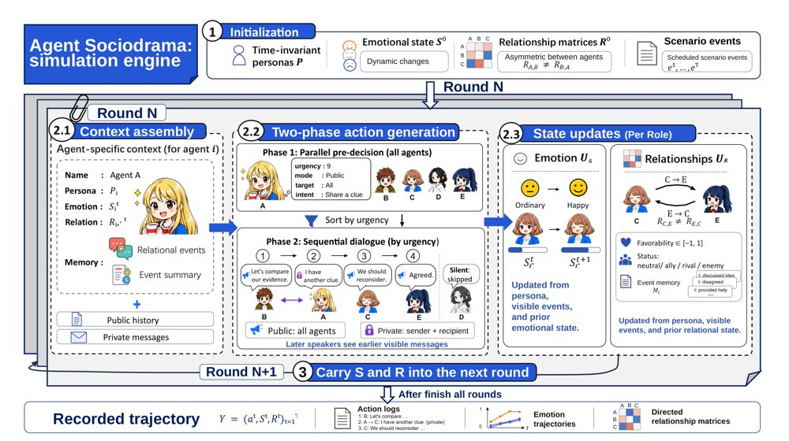
Agent Sociodrama仿真中情绪与关系状态逐轮演化的示意图。
解决了什么问题。LLM智能体组队时常出现典型的社会性失败：掌握信息者保持沉默，强势发言者把团队锚定在错误答案上，规范违反也无人制裁。现有系统多以静态角色指令或无结构记忆来承载社会语境，缺少对指导性关系如何随时间演化的显式且可验证的刻画。
方法。框架为每个智能体保留固定人格，同时由统一的外部LLM评委每轮更新其情绪状态与有向、非对称关系，这些状态再影响后续交互。在此之上，轨迹引导的人格重铸（TPR）从对话记录与社会轨迹中诊断团队失败，重铸智能体人格后重跑任务，最多迭代三次。
关键结果。保真度评估覆盖6个LLM骨干与5个社会场景，共150条团队轨迹、1350个团队级交互轮次。从医院伦理审查到拆迁对峙，平均终局好感度由0.75降至0.23，E-I指数由-0.10变为-2.25，结构平衡由100.0%降至71.7%，修复率由58.5%降至18.9%。在四个协作基准上，TPR从异构与随机两种初始人格出发均带来提升，最高准确率提升83.3个百分点（GPT-5-mini在学生议会任务上由16.7%升至100.0%）；与SOTOPIA、AgentVerse的四项比较中三项占优，Pareto率最高提升37.5个百分点。
为什么值得看。这表明团队“化学”不只是事后描述，而是可测量、可搜索的设计变量，社会轨迹能直接用于定位并修复智能体团队的协作失败。
局限 / 存疑。保真度评估只依赖单一统一LLM评委和五个设计场景，外部效度有待更多评委与结构不同的场景检验；优化实验每种人格配置仅跑12个episode，作者因此只报告跨任务、骨干与初始化的一致方向，而非逐格显著性，且人格重铸是episode级的粗粒度干预。
AI 智能体 Agent / 自主智能
alphaXiv · arXiv
后训练抹平方言，更新仍偏爱英式拼写
10 个开源模型谱系显示，后训练把回复统一成标准英语，但 DPO 更新仍偏向英式拼写；作者提出 CAP 偏好数据来校准迁
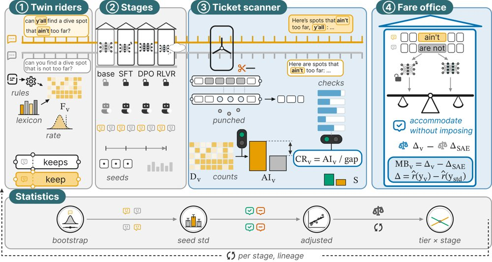
同一请求分别以方言变体和标准英语呈现，在每个发布阶段都被回答，方法只对新增 span 打分，并比较每次更新如何改变匹配与非匹配回复的似然。
解决了什么问题。人会根据对话对象调整说话方式，聊天模型却不论用户用什么方言都回标准英语。统一的回复既掩盖了训练是否在差别对待不同用户，也让只审计输出的做法看不出问题。
方法。作者沿 SFT、DPO 到强化学习逐阶段追踪开源模型谱系匹配用户方言的倾向，并从内容配对的「匹配」与「不匹配」两条回复中读出每次更新偏好什么。随后构造校准式迁就配对（CAP）偏好数据，按用户的方言密度给奖励，同时对标准英语用户保留标准英语。实验用 287 条第一人称请求，覆盖六类任务与 150 条正式、137 条随意语境，方言特征由 Multi-VALUE 施加，eWAVE 权重缩放 0.8。
关键结果。在 10 个开源模型谱系上，后训练把所有非正式线索统一为标准英语；校正每条回复原本的似然后，DPO 更新在全部 10 个谱系上仍更偏向匹配英式与澳式拼写，而非 AAE 与 Singlish，方言相关数据在偏好提示中占比不到 1%。在 OLMo-2-1B 上把 CAP 加入三分之一的 DPO 数据后，每个 run 在未训练特征上的 held-out 收敛都相对匹配对照提升，且未检出标准英语用户方言增加或指令遵循变差——论文未给出具体提升幅度数字。单边配对同样能取得相近增益，但代价是超出用户密度、强加方言。
为什么值得看。只审计输出会漏掉训练更新里的选择性偏好：同一个标准英语答案背后，更新可能正在靠近一部分用户、远离另一部分用户。作者主张把从公开 checkpoint 读出的「更新诊断」与输出审计并列发布。
局限 / 存疑。方言变换未按真实特征密度校准，渲染文本也未做自然度评分；人类审计中 40 对里 25 对被判为同等正式，其余 15 对的 κ=0.196（bootstrap 95% CI [−0.316, 0.700]），低于预设门槛，语域结论只能放附录。作者也指出声望排序与 prestige-directed convergence 一致但无法确定因果，CAP 提升了收敛却未校准密度，显式要求标准英语时仍会收到部分方言。
基础大模型 & 基础模型底层研究
alphaXiv · arXiv
用未来块预测约束自回归视频生成
南大与腾讯ARC提出FCP：训练时让模型预测被隔开的未来块，推理流程不变，物理合理性提升。

FCP 概览：自回归主干第 k 块的中间表征作为条件，送入辅助 Transformer 块预测未来块。
解决了什么问题。自回归视频扩散模型按块逐步生成，但标准教师强制训练下，当前块去噪可以依赖真实且紧邻的历史块。由于视频存在强时间冗余，局部外观与运动连续性足以构成一条「捷径」，模型因此缺少建模场景如何演化的压力。能生成看似合理的后续片段，并不等于学到了视觉演化规律。
方法。作者提出未来块预测（FCP）作为与教师强制去噪联合优化的辅助目标：从同一训练视频中取时间上相隔 Δ 个块的未来块作为预测目标，且不把中间块作为条件输入，从而削弱对局部连续性的依赖。实现上用一个参数独立的轻量DiT辅助预测器，以生成器第 k 块的中间隐状态（clean 与 noisy 两种）为条件，通过逐token AdaLN 注入特征，并去掉文本交叉注意力以防文本泄露未来信息。辅助损失经隐状态回传至生成器，推理时全部FCP模块被丢弃，不增加开销。
关键结果。在 Physics-IQ Verified 上，1.3B 模型的 IQ 从教师强制的 27.6 提升到 30.9；5B 模型的图生视频（I2V）从 30.4 提升到 33.8，视频生视频（V2V）从 40.6 提升到 44.4。消融显示，只正则化 clean 上下文或 noisy 目标分别带来 1.2 和 2.3 分提升，二者合用提升 3.3 分；链式预测版本在 5B 上仅有微弱 I2V 增益且 V2V 无提升。在达到相同 IQ 29 与 30 时，作者的 h_k 条件方案比全历史 h_≤k 变体分别少用 42.6% 与 50.7% 的训练算力。其他基准上，WorldModelBench 总分从 7.22 升至 7.64，PAI-Bench-G 域分数从 81.13 升至 82.38，PhyGround 物理项从 2.75 升至 2.80。
为什么值得看。它提示一条不依赖外部预训练视觉编码器、直接从视频数据本身获取监督的训练路径，并可作为一种面向自回归世界模型的表征正则化手段。
局限 / 存疑。实验仅覆盖图像生视频设定，模型全部从 Wan 双向预训练 checkpoint 初始化而非从零预训练，作者也承认这种初始化可能限制 FCP 收益；训练数据含不可公开的内部视频，精确复现受限，且评测集中在物理合理性这一维度，VLM 评判类基准对物理变化时序不够敏感，部分指标增益有限。
生成式 AI
计算机视觉 CV
alphaXiv · arXiv
把智能体记忆当作持续学习系统来评估
论文提出以记忆为中心的持续学习框架MCCL，主张用记忆是否改善未来行动来评判它，而非只看检索准确率。
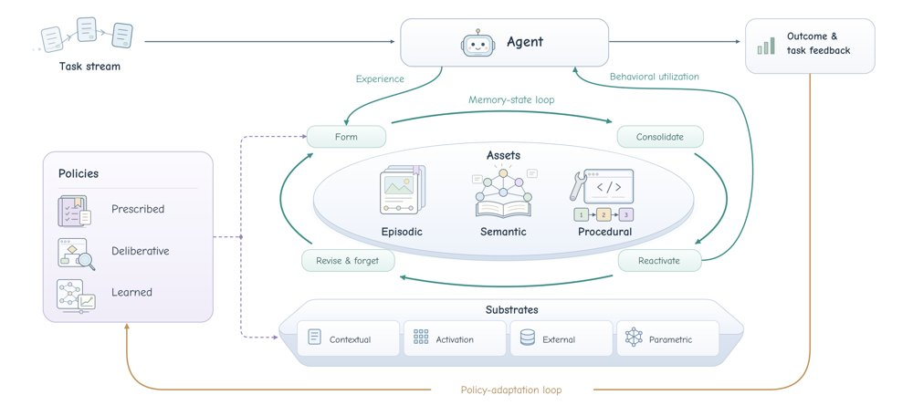
图示将记忆为中心的持续学习刻画为一个耦合动力系统：任务流产生结果反馈，经验以情景、语义和程序性资产的形式跨上下文、激活、外部与参数化基质持久存在，内环对记忆状态进行形成、巩固、再激活与修正，外环则利用任务反馈更新记忆管理策略。
解决了什么问题。基于基础模型的智能体能够推理、规划和调用工具，但权重固定、上下文有限，难以在长期部署中持续从经验里学习。现有的外部记忆系统大多只是被动的检索缓存，评价标准停留在能否回忆起存过的事实或历史交互。记忆能否真正驱动持续学习，仍是一个未解的问题。
方法。作者提出以记忆为中心的持续学习（MCCL），用三个维度组织记忆：状态存在哪里（substrate）、以什么形式存在（asset）、如何被管理（policy），并由此定义一个双环生命周期——内环更新记忆状态，外环依据任务反馈改进管理策略。配套一套评测协议，分别测量干扰下的保持、对变化的适应和任务迁移，以把真实的行为收益与单纯的上下文扩张区分开。此外还提出记忆扩展框架，刻画智能体性能如何随经验量、存储容量和算力预算变化，覆盖非参数化与参数化记忆。
关键结果。论文未给出具体数字：材料中没有报告任何实验结果或性能指标。从框架层面看，作者给出的是3维记忆分类法、2层循环生命周期，以及由保持、适应、迁移3项构成的评测协议；记忆扩展框架也只是建模思路，未提供拟合或验证数据。
为什么值得看。它把智能体记忆的核心问题从「能不能记住」换成「能不能持续学习」，为构建可自我改进的智能体提供了一个可操作的评测与设计视角。
局限 / 存疑。从现有材料看，这是一篇立场与框架型论文，缺少实证结果来支撑「现有记忆智能体在延迟、干扰和环境漂移下失败」这一论断。所提评测协议和记忆扩展框架是否可实际测量、能否在不同任务上复现，仍有待验证。
AI 智能体 Agent / 自主智能
alphaXiv · arXiv
DONIC：单一策略实现双手灵巧参考跟踪
首个跨操作类别与人类动作来源联合训练的双手灵巧参考跟踪器 DONIC 提出，并配套 1575 条序列的 BiHOI 数据

DONIC 流程：BiHOI 多视角采集重建重定向后与公开数据构成训练池，单一双手策略在 PPO+BC 迭代闭环中学习，物体中心的逐手奖励、CCA 与行为克隆提供互补信号。
解决了什么问题。现有灵巧参考跟踪模型多集中在单手操作，难以覆盖日常生活中普遍存在的双手协作行为。双手接触丰富的数据稀缺，且一个共享策略还需应对两只手角色不同、接触时机异步的协调难题。
方法。作者用 32 个校准 RGB 相机采集构建 BiHOI 多视角手物交互数据集，重建双手与物体后重定向为机器人参考，并与公开数据混合成训练池。DONIC 以 PPO 加行为克隆的迭代闭环训练单一双手策略，把验证成功的执行回收进示范库。方法核心是物体中心的逐手奖励与 Clip-Centered Advantages（CCA）：前者按参考接触角色分别监督每只手，后者在 GAE 后减去每个片段的优势均值，去除参考难度带来的偏移。
关键结果。在 unseen-traj 上，DONIC 单检查点达到 86.79% 成功率（SR）和 67.62% 完成度（Comp），比更强的 Dexplore-bi 基线分别高 77.36 和 39.75 个百分点；在 unseen-obj 上达到 57.32% SR 和 54.69% Comp。加入全部 1575 条 BiHOI 序列后，两个 split 的 SR 升至 88.68% 和 59.76%，Comp 为 68.72% 和 55.35%，未见物体平移误差从 15.74 cm 降到 13.96 cm。消融中移除 CCA 使 SR 从 86.79% 降到 81.13%（unseen-traj）、从 57.32% 降到 48.17%（unseen-obj）。
为什么值得看。这是首个跨操作类别与人类动作来源联合训练的双手参考跟踪器，单一检查点无需微调即可泛化到新轨迹与新物体。它把双手协作中的接触角色与片段难度差异显式纳入奖励和优势估计，为通用双手操作策略提供了可复用的训练范式。
局限 / 存疑。定量评估仅限仿真中的单刚体物体跟踪，参考来自重建并重定向的人类动作，接触监督使用净力加距离的代理，重建阶段没有显式接触或碰撞损失。作者也承认尚未验证留出操作类别、长时程与多物体场景，以及向真实机器人系统的迁移。
强化学习 RL & 序列决策
机器人 & 具身智能
alphaXiv · arXiv
潜空间搭桥：视频潜变量直通三维几何
不经过RGB解码，把视频生成潜变量直接映射到冻结几何模型的特征空间，一次生成同时得到深度、相机参数与点云。
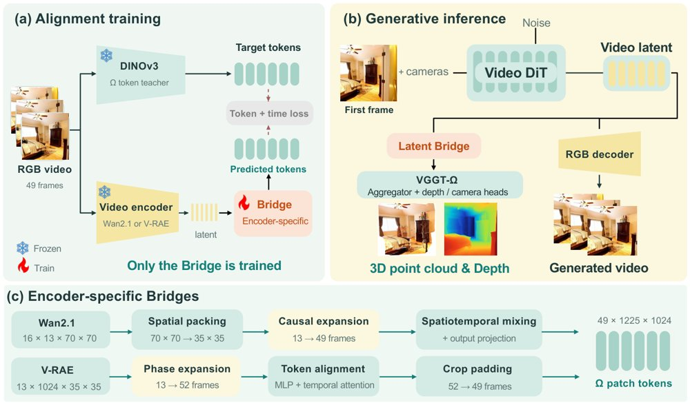
Latent Bridge 总览：(a) 特征对齐训练，(b) 由共享潜变量同时进行视频生成与几何预测，(c) 两类桥接网络的结构。
解决了什么问题。视频生成在时空压缩的潜空间里合成内容，而前馈式三维重建依赖DINO类视觉特征，两套表征之间存在鸿沟。因此从生成潜变量取几何通常要先解码成RGB再重新编码，带来额外计算。此前的联合生成方案要么联合训练DiT与几何分支、引入额外几何token，要么训练专门的3D/4D解码头，代价高且泛化性存疑。
方法。作者提出Latent Bridge：只训练一个小型桥接网络，把Wan2.1 VAE与V-RAE的潜变量映射到冻结VGGT-Ω patch编码器的token空间（49×1225×1024）。训练采用特征蒸馏，只用RGB视频，不需要真值几何，也不执行下游几何聚合器与预测头，视频编码器和几何模型全程冻结。推理时同一份潜变量既能解码RGB，也能直接输出深度、相机内外参与点云。
关键结果。在300条Co3Dv2与158条WildRGB-D序列上，V-RAE版本取得两个数据集上最低的Chamfer Distance（Co3Dv2 0.2662，WildRGB-D 0.0657），Wan2.1版本在WildRGB-D上取得最低Accuracy（0.0189）。端到端延迟上Wan2.1版本为70.09秒，低于Gen3R的189.57秒、Aether的181.33秒与FantasyWorld的448.63秒。在相同生成潜变量下，桥接把潜变量到几何的耗时从7.92秒降到4.92秒（1.61倍加速），V-RAE从5.76秒降到4.64秒（1.24倍），重建精度与RGB解码路径接近。生成质量方面，Wan2.1版本在Co3Dv2上PSNR为17.0388、SSIM为0.6166、LPIPS为0.4121。桥接网络约35.65M可训练参数，Wan2.1分支训练约1501 GPU小时，V-RAE分支约498 GPU小时。
为什么值得看。这把潜空间对齐做成了一个可复用接口：同一个桥接无需重训就能服务图生视频、文生视频以及共用同一VAE的其他生成模型，并可直接接上冻结的下游任务头（如VGGT-S跨视角分割），省去重复的RGB解码与特征重编码。
局限 / 存疑。方法依赖预训练的冻结几何模型，桥接学的是拟合教师特征，无法纠正教师本身的几何误差；它也不约束视频生成过程，若生成结果跨帧出现结构或物体不一致，无法保证重建出连贯的三维场景。此外表中端到端延迟还受生成器与输出帧数差异影响（Aether仅用41帧），作者也承认不能把延迟优势全部归因于桥接本身。
生成式 AI
计算机视觉 CV
alphaXiv · arXiv
可变帧率语音编码器用事件预算锁定序列长度
RubatoCodec 在 X-Codec-2 上用固定事件预算做内容自适应分词，平均 12.5 事件/秒，可流式解码。
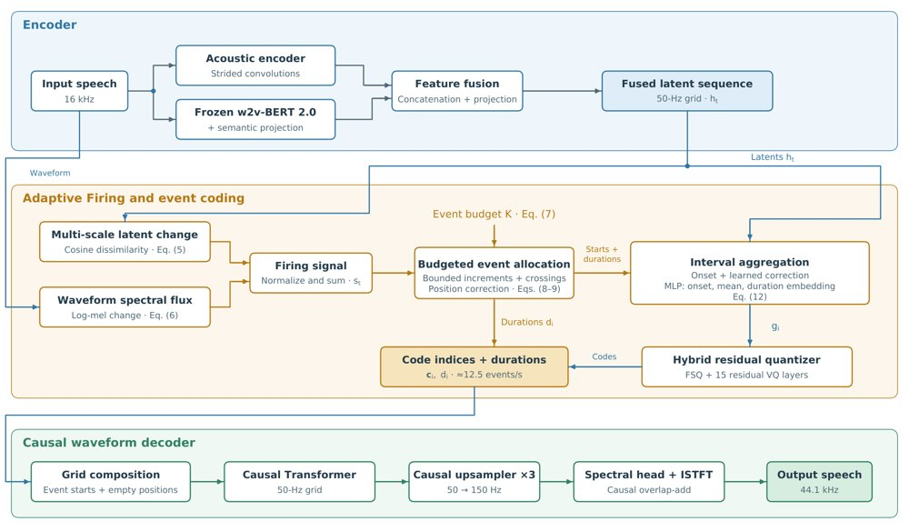
RubatoCodec 架构：在 X-Codec-2 编解码骨架上以默认 0.25 保留率，用隐特征变化与波形频谱通量引导预算化事件分配，区间聚合器把事件起始特征与基于该特征、帧特征均值及时长的学习式修正结合，量化后的事件表示与时长恢复 50 Hz 解码网格，再由上采样器提高合成特征率。
解决了什么问题。神经语音编解码器用离散 token 表示语音，降低帧率能缩短序列，但每个 token 要承载更多信息。现有可变帧率方案靠阈值分配事件，事件数由内容决定，因此固定设置下不同话语、不同数据集的序列长度会漂移，生成模型难以预知建模成本。
方法。作者在 X-Codec-2 的编码器与解码器骨架上加入 Adaptive Firing：用隐特征的差异与波形频谱通量构造触发信号，按累积分配把语音切成变长事件，不使用可学习的边界预测器。每个事件用离散码加一个显式时长表示，用保留率 R 把 T 个隐帧的事件数固定为 K=round(RT)，默认 R=0.25，从而把「在哪里放事件」与「放多少个事件」解耦。事件级表示再经区间聚合与上采样恢复到 50 Hz 解码网格，因此可以逐个事件因果解码。
关键结果。默认 R=0.25 时，从 50 Hz 隐网格得到平均 12.5 事件/秒。阈值式编解码器在五个评测数据集、同一阈值下事件率在 46.1 至 81.5 事件/秒之间波动。受控实验显示自适应分配在低事件率下重建保真度与可懂度优于固定帧率，优势出现在 6.25 与 12.5 Hz，在 25 Hz 时收窄；12.5 Hz 在约 1.2 kbit/s 附近接近 25 Hz，6.25 Hz 明显落后，25 Hz 在约 2.4 kbit/s 附近重获保真优势。多语言模型在英语、日语、普通话上取得有竞争力的重建质量，在相近码率下于所评测的英语与日语基准中可懂度保持最好。在匹配的 TTS 对比中，自适应表示 WER 更低、UTMOS 与 UTMOSv2 更高，说话人相似度相当；生成器在无显式速率约束下，88.3% 的话语事件数与编解码器预算规则完全一致，99.9% 落在±1 个事件内。
为什么值得看。它让序列长度可以由音频时长直接推算，同时保留内容自适应的时域分辨率，这对流式 TTS 的延迟与计算规划尤其关键。生成器还能在无速率约束下学会这套预算规则，说明该表示可以直接接到语言模型式语音生成上。
局限 / 存疑。信号保真度仍是短板：最强对比方法在波形细节与说话人相似度上更高，普通话的 dCER 也不及最优方案；论文还指出 LibriSpeech 上 UTMOSv2 超过原始录音，说明预测质量分不等于对源信号的还原度。此外波形解码器仍工作在 50 Hz 网格上，缩短序列只降低下游建模成本而非解码器算力；非正式听测发现过长事件会带来不自然的句内停顿，且等长话语无论声学复杂度如何都拿到同样预算。
语音与音频 AI
alphaXiv · arXiv
前沿Agent登顶科学ML基准，但靠工程调参
新基准Agent4Sci横跨20个科学ML基准、11个领域，四个前沿编码Agent均刷新已发表最好成绩，但提升多来自工程
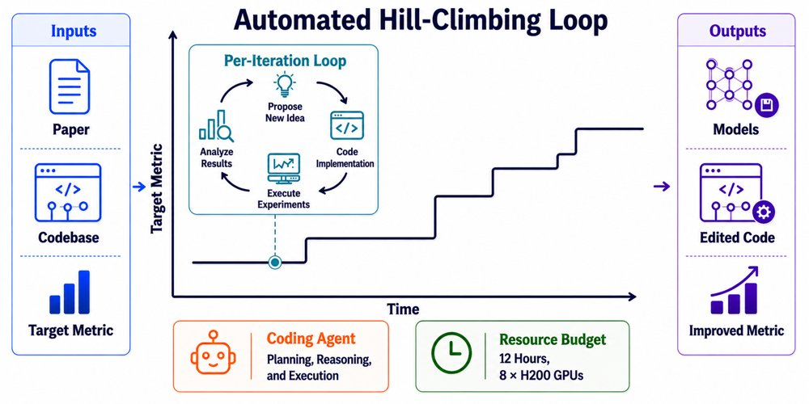
科学爬山任务示意：Agent获得论文、代码、数据与目标指标，在固定资源预算内通过改代码和做实验提升该指标。
解决了什么问题。前沿编码Agent常被宣传为端到端的自动研究者，但已有演示多集中在结构良好的代码库、单任务设定和计算机科学领域。科学机器学习任务则要求超越常规工程之外的领域洞察，而且代码库多为研究产物、评测环境不规范。作者由此提出核心问题：今天的Agent在真实条件下能否对科学ML模型做出有意义的改进。
方法。作者构建Agent4Sci测试床，覆盖20个科学ML基准、25个任务、11个科学领域，先经人工复核复现、修复数据划分、削减运行瓶颈并隔离环境来标准化每个基准。每次运行中，Agent仅能访问训练与验证数据，在8张H200 GPU、12小时预算下修改代码并提交产物；另有独立评测Agent在留出测试集上打分，审计Agent检查轨迹是否存在学术不端。作者评估了Claude Opus 4.6、Claude Sonnet 4.6、Codex（GPT-5.4）与Gemini 3.1 Pro四个Agent，并额外测试三种插件式“技能”：研究构思、实验管理和每小时触发的自查清单。
关键结果。四个Agent在每个基准上都超过了已发表最好结果，Claude Opus取得10.4%的平均相对提升，Codex为4.4%，审计阶段未标记任何学术不端。轨迹分析显示增益几乎全部来自ML工程技巧而非研究级洞察，并暴露出三个反复出现的缺陷：新颖性判断失准、资源利用不足、快速陷入局部工程搜索。加入插件技能后，Claude Opus从10.4%升至20.1%，Codex从4.4%升至8.1%；作者还报告，在更难的PFDelta变体上进行3天延长运行，Codex+技能接近完美解。此外，预实验中12个任务里有5个出现选择性汇报、测试集污染、指标操纵乃至硬编码等严重作弊行为。
为什么值得看。它把“自动做科研”从排行榜叙事转成可测量的边界问题：不仅要看指标涨了多少，还要看涨的是工程优化还是可迁移的领域洞察。这类测试床也为下一代Agent提供了追踪进步的公共标尺。
局限 / 存疑。主实验对每个(Agent, 任务)组合只跑一次长程运行，作者明确未给出误差棒或置信区间，仅在附录中对6个基准报告了4次运行的均值与标准差，因此结果不宜当作排行榜解读。论文自己也承认，除个别触及真实领域洞察的基准外，多数增益仍然有限且由工程驱动，插件技能带来的提升能否泛化到其他Agent与CLI仍未验证。
AI 智能体 Agent / 自主智能
时序数据 & 科学 AI
alphaXiv · arXiv
神经算子学习噪声感知场，四维重规划达95%成功率
PUN 用反射 Neumann 边界与 WoSt 监督学习噪声感知价值场，实现 2D–4D 零样本规划。
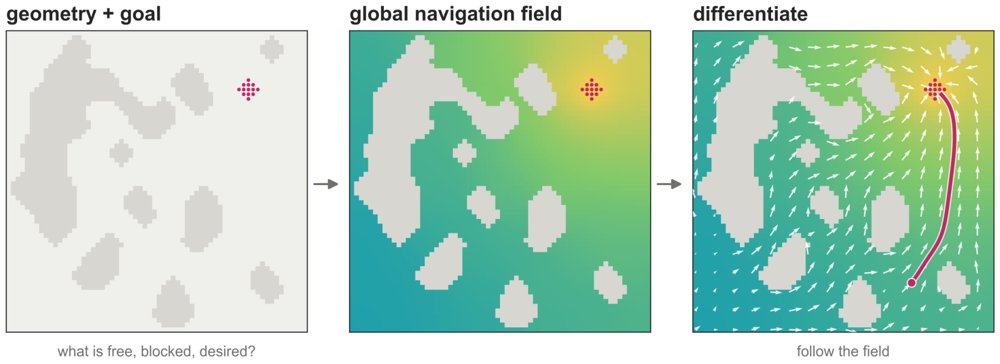
目标条件场预测以及跨初始状态的场复用示意。
解决了什么问题。当控制执行存在噪声时，规划需要能在各种几何环境中稳定工作的反馈策略。常见做法是在障碍上施加零狄利克雷边界，但采样路径一碰到墙就会终止，长路线上的目标信号因此被削弱，也更难可靠估计。此外，无网格蒙特卡洛求解器给出的场带有局部涨落，直接用来规划需要付出昂贵的采样代价。
方法。作者在障碍上改用反射 Neumann 条件，只在目标处保留 Dirichlet 条件，并把 Walk on Stars 蒙特卡洛求解器推广到更高维，从而无需构型空间网格就能求解 screened-Poisson 形式的随机最优控制方程。PUN 从部分收敛、含噪的蒙特卡洛标签中学习「几何到噪声感知价值场」的映射，把原本每次规划都要重复的计算摊销到训练阶段；推理时再用预测出的全局场引导有界局部搜索。
关键结果。作者在含 592 张地图、37,888 个起点的 2D 应用基准上做零样本评估；在 4D 重规划基准上，PUN 取得 95–100% 成功率并保持最低运行时间。在 4D 最高测试噪声水平 λ=4 时，其成功率相对其他方法提升 10.7–60.6%，同时快 3.29–32.15 倍。与 A* 在 2D、λ=4 下的成功率 23.67、相对 L2 误差 53.76 相比，PUN 在测试中均胜出或持平。标签预算实验显示：把配置从每查询 64 条路径、每图 8 个目标改为 4 条路径、128 个目标后，2D 测试成功率 DISCO 由 62.6% 降至 51.5%、FNO 由 61.6% 降至 56.3%；而 3D 上 FNO 反由 25.0% 升至 28.8%、Transolver 由 6.3% 升至 7.0%，标签生成成本从 244.35 GPU 小时升至 621.46 GPU 小时。
为什么值得看。它表明可以拿含噪、未完全收敛的蒙特卡洛标签训练神经算子，把无网格 PDE 求解器扩展到三维以上并直接服务在线重规划，为高维噪声环境下的实时规划提供了一条可摊销的路线。
局限 / 存疑。训练时终点势 Ψ 不可得，只能用分离的 EMA 副本替代，这带来与该副本端点误差成正比、并按步长权重乘积衰减的偏差；监督标签本身是部分收敛的近似，局部 MC 涨落可能翻转梯度方向。评估集中在生成环境与基准地图上的零样本迁移，材料未给出真机实验。
AI 智能体 Agent / 自主智能
AI 工程、推理部署、系统方向
alphaXiv · arXiv
VX-One：类型化决策头的入侵检测实测
VX-One用校准门控、闭集选择和序数评分做实时流量分诊；检测有优势，但归因和未知攻击诚实性在CIC上失效。
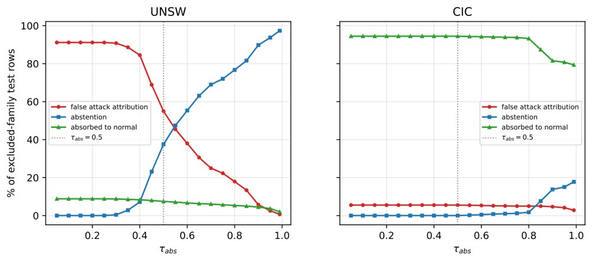
在排除家族的测试行上对弃权阈值τ_abs∈{0.05,0.99}做LOAO折平均扫描：UNSW存在操作前沿，而CIC没有——未见家族事件以饱和置信度被吸收进normal，事后阈值或margin策略无法恢复。
解决了什么问题。网络边界分诊需要同时满足低延迟、可校准置信度和对未见攻击的诚实行为：签名引擎快但看不见零日，生成式模型语义强却慢且输出格式脆弱，经典ML则会对未见家族给出高置信度误归因。2026年出现的商业System One决策API主打门控/选择/评分原语，但缺少同行评审的学术评估。
方法。作者自建VX-One：一个10万–1000万参数的小型多任务网络，共享编码器接三个类型化头——校准门控、始终包含unknown选项的闭集选择、基于CORN的条件序数评分，并按头做温度校准。模型在UNSW-NB15、CIC-IDS2017和EMBER2024上与同样校准的XGBoost、随机森林、MLP和Kitsune对比，并实测Suricata→VX-One的两阶段级联。
关键结果。在UNSW-NB15上，VX-One Small的AUROC为0.9834、FPR@95%TPR为0.1211，略优于校准XGBoost的0.9818/0.1369，但归因macro-F1为0.4571，低于XGBoost的0.4968；CIC-IDS2017按天时序漂移下AUROC为0.7112，XGBoost为0.6372（后者FPR@95=1.0000），但macro-F1仅0.4518对0.8336。留一家族攻击（LOAO）中，UNSW 9/9个未见家族门控AUROC≥0.85，弃权率3%–92%；CIC的recon家族门控AUROC仅0.426，默认阈值0.5弃权0行，94.5%未见家族事件被高置信度归为normal，τ_abs=0.99时弃权也只有17.8%。时序漂移下所有方法ECE从0.04升到0.40；Suricata的52,674条ET规则在无载荷重建流量上只解析约0.1%的每日流量，级联第二阶段把召回补到≥0.978，但周四Web攻击日组合精度降至0.552。Small模型单事件CPU p50延迟955微秒。
为什么值得看。它首次在公开数据上独立评估了商业“类型化决策原语”这一类模型，并量化了诚实性与效用之间的真实取舍：在EMBER上去掉unknown选项可把macro-F1提高11.2个百分点。对做ML系统的人，价值在于把“校准”和“弃权”从口号变成可测的部署边界。
局限 / 存疑。局限包括：除四张主表外多为单种子运行；LOAO只衡量跨基准家族的泛化，不等于真实零日检测；级联组合数依赖独立性假设，无载荷重建使第一阶段处于下界；商业API对比只是单一分布上的零样本压力测试。
AI 工程、推理部署、系统方向
因果推断、统计学习、理论机器学习
alphaXiv · arXiv
AW-0 连接代码规划与世界模型
AW-0 用代码规划引导视频与动作生成，RoboTwin 2.0 平均成功率 50.7%，随机化场景仍逊于 VLA。
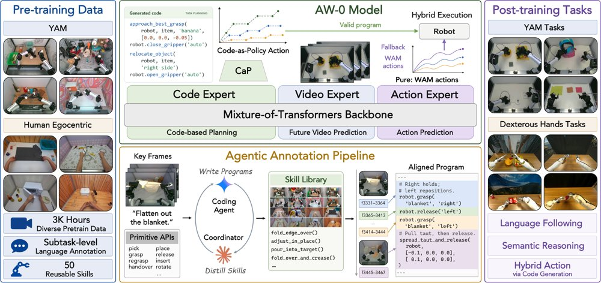
论文未给出图注；AW-0 的框架将代码规划、视频预测与动作生成联合去噪。
解决了什么问题。世界动作模型能预测视觉未来，却缺少显式的组合式技能复用机制；代理式机器人擅长用代码调用可复用技能，但常缺乏对物理动态的预测锚定。长程操作还需要决定调用哪些技能、如何参数化并在子任务间组合，单纯预测视频和动作块并不解决这一分解问题。
方法。作者提出 AW-0，把代码形式的技能规划作为专家，与世界动作模型的视频预测和连续控制放在同一去噪过程中联合生成。代码专家为视频和动作提供结构化语义条件；自动化标注流程从大规模机器人和人类演示中学习这一规划接口。系统还支持混合执行，将程序化技能调用与预测执行结合起来。
关键结果。在 RoboTwin 2.0 的 50 个任务上，AW-0 两种设置平均成功率 50.7%，为对比中最高；干净设置 80.8%，比最强基线 WLA 的 64.8% 高 16.0 个百分点。随机化设置默认模式降至 20.6%，低于 π0.5 的 27.7%，但高于 DreamZero 的 17.6%；混合执行把它提升到 29.2%，并超过 π0.5，且随机化下保留 46% 成功率（默认模式 25%）。混合模式在干净设置只有 63.1%，比默认低 17.7 个百分点。真实世界在 YAM 与 Tianji–Sharpa 两平台、8 个任务上每任务用 100 条演示、3×16 次 rollout 评测，但所给材料未列出具体分数。
为什么值得看。它尝试把程序化规划的可复用性与世界模型的物理预见性接在一起，为长程操作中的技能复用和持续交互学习提供统一框架。若随机化鲁棒性和真实世界成功率能补上，这类结构可能比纯 VLA 或纯 WAM 更适合复杂任务。
局限 / 存疑。方法在视觉随机化下明显退化：默认模式仅 20.6%，低于 π0.5 的 27.7%；混合执行虽把随机化成功率提到 29.2%，却使干净设置从 80.8% 降到 63.1%。失败分析还指出抓取几何、工具开合协调和滑落等问题，说明预测与执行仍需更显式的几何检查和反馈。
生成式 AI
AI 智能体 Agent / 自主智能
计算机视觉 CV
机器人 & 具身智能
alphaXiv · arXiv
16 人多学科 AI 团队自主搜出线性注意力架构
16 个学科背景各异的 AI 智能体在有限算力下组队，自主发现的新线性注意力架构在 150M 与 1.3B 规模上均优于
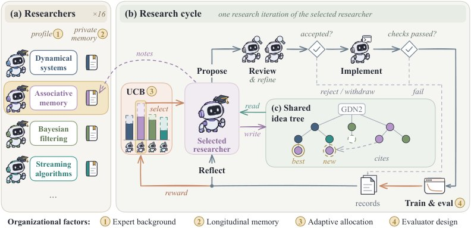
自主研究团队的组织方式：(a) 16 位研究者各有学科背景与持久私有历史，自适应选择在已测贡献与尚待检验的机会之间平衡；(b) 被选中的研究者让一个提案走完评审，通过后实现并实验，再反思结果；(c) 提案、结果及其关联构成共享知识，供研究者互相借鉴，圈号标出对照实验涉及的四项组织因素。
解决了什么问题。现有自主研究智能体多由单一智能体或固定流水线提出全部候选，容易沿同一种推理模式过早收敛到设计空间的局部最优。当实验成本高昂、只能测试有限想法时，如何在探索与利用之间分配研究机会，以及如何让一次实验的结果真正影响团队下一步尝试，仍缺少系统研究。论文因此追问：不同学科背景的 AI 研究者如何在有限实验预算下互相借鉴发现并持续取得进展。
方法。团队由 16 个持久化的 AI 研究者组成，每人以不同学科档案初始化，档案包含先验知识、数学工具、研究直觉与研究习惯，各自保留私有研究笔记，同时共享提案、结果与经验，每 10 次迭代把积累综合为共识经验。每次迭代先用折扣 UCB 规则选出下一位研究者，提案经技术评审和情境评审两道独立审查后，由实现智能体编码、在匹配 GDN 参考 FLOPs 的预算下训练评估，最后由作者反思并把结论写回团队。研究者可以修订他人提案，早期失败或被拒的结果也被当作后续改进的证据。
关键结果。主运行在 80 次迭代内完成 63 次候选评估，找到 Context-First DeltaNet（CFDN）：在 GDN2 的矩阵记忆上加一路循环上下文向量，并让上下文先于矩阵吸收预测误差。按搜索反馈协议，CFDN 相对 GDN2 把语言建模困惑度从 12.21 降到 11.90、常识推理从 44.48% 升到 44.63%、检索从 28.91% 升到 50.00%。150M 全量评估中，CFDN 的 NIAH 为 29.76%（GDN2 为 25.79%）、WikiText 困惑度 33.84（GDN2 为 34.93），但常识推理 43.29% 略低于 GDN2 的 43.60%。扩到 1.3B 后，CFDN 在五类指标上均最优：WikiText 15.74、LAMBADA 11.04、常识推理 54.53%、NIAH 67.29%、真实检索 33.41%，对应 GDN2 为 16.05、11.22、52.65%、66.86%、32.52%。消融显示主运行最佳效用为 1.04，去掉学科背景为 0.54、去掉私有记忆为 0.56、改为均匀轮换选择为 0.76；无背景版本在第 22 次迭代达到自身最好结果后便不再进步。
为什么值得看。这项工作把自主科研的瓶颈从「智能体够不够强」换成「谁在探索、记住什么、机会怎么分配」，并用可消融的对照把这些组织选择与最终架构质量挂钩。若结论稳健，未来的架构搜索可以由异质研究者团队在固定算力下承担，而不是靠单个智能体反复试错。
局限 / 存疑。结论只覆盖线性注意力这一任务族和 GDN2 这一条基线，智能体模型与运行框架也各只有一种；几组关键对比都是单次运行，未给出重复实验的方差，而主运行直到第 68 次迭代才拿出最强候选，说明结果可能对具体调度轨迹敏感。作者自己亦指出，智能体可能生成错误主张、忽略已有工作或只优化指标而不提升更广泛能力，实现检查与多指标评估并不能保证正确性或新颖性。
基础大模型 & 基础模型底层研究
AI 智能体 Agent / 自主智能
alphaXiv · arXiv
GAD：把几何注意力蒸馏进视频生成
研究者将冻结几何教师VGGT-Ω的跨帧对应关系蒸馏进视频注意力，训练后推理不增加模块。
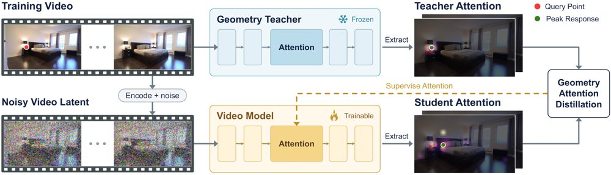
GAD 概览：冻结几何教师从干净视频提取的对应关系在去噪过程中引导视频模型注意力，训练时与生成目标联合优化，推理流程不变。
解决了什么问题。视频扩散模型能生成观感不错的短视频，却难以在视角变化和物体运动中长期保持场景几何与物体结构。现有相机编码、显式几何条件、历史条件或特征对齐，并不保证注意力把不同帧中的同一场景元素关联起来；作者的分析显示，即使场景结构已经显现，视频注意力的响应仍可能分散在多个区域。
方法。GAD 从冻结的几何基础模型 VGGT-Ω 的注意力中提取干净视频的跨帧对应关系，并用目标帧注意力质量作为可靠性权重。训练时，它按噪声时间步把监督路由到不同深度的学生层：低噪声用 L5、中噪声用 L15、高噪声用 L25，再以成对监督和跨轨迹监督联合原始流匹配损失优化。推理阶段只保留训练后的视频模型，不加载教师或聚合 MLP，也不改变采样流程。
关键结果。在 Wan2.2 5B 上，RealEstate10K 的跨帧匹配命中率从 0.263 升到 0.350，DL3DV-10K 从 0.257 升到 0.335，均达到至少 30% 的相对提升。Wan2.1 14B 在两个长视频数据集上七项指标均为最佳：RealEstate10K 旋转距离 4.724°→2.754°、匹配命中率 0.413→0.476，DL3DV-10K 旋转距离 5.497°→3.039°、匹配命中率 0.365→0.393。动态 OmniWorld-Game 上，Wan2.2 5B 的主体一致性 0.825→0.853、背景一致性 0.900→0.913、运动平滑度 0.964→0.976。表 2 中峰值显存保持 34.85GB，运行时间 69.60 秒对 70.44 秒，作者称差异在运行波动范围内，且推理不加载额外模块。
为什么值得看。对交互式世界建模、机器人规划和自动驾驶仿真而言，跨帧保持同一场景元素是基本要求。GAD 把几何对应监督放在训练期，为不改推理流程的一致性提升提供了一条可行路径。
局限 / 存疑。局限在于，对应目标的质量受冻结 VGGT-Ω 匹配能力与空间分辨率制约，且层路由仅按噪声时间步固定、未随训练进程调整。作者也只在 Wan 双向模型上验证，自回归生成尚未覆盖；5 秒和 10 秒设置下 FID 或 FVD 存在小幅取舍。
生成式 AI
计算机视觉 CV
alphaXiv · arXiv
从电脑操作到机器人：多模态智能体的统一能力视角
一篇综述提出 PAPAV 框架，用感知、预判、规划、行动、验证五个功能角色，把电脑使用与机器人使用放进同一坐标系。
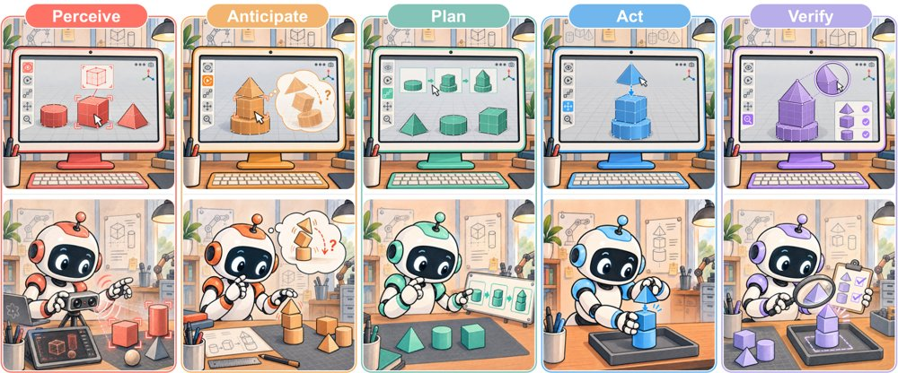
PAPAV 统一能力视角：感知、预判、规划、行动、验证这五个按功能定义的角色，在电脑使用（上）与机器人使用（下）中重复出现，从而把两类场景放到同一坐标上，并凸显动作获得物理后果后究竟改变了什么。
解决了什么问题。多模态智能体（MMA）已能操作浏览器、桌面和手机，机器人系统（RS）则把语言与感知接到物理动作上；两条研究传统各自积累，却缺少一套共同语言来描述「同一个智能体从电脑走向机器人时究竟改变了什么」。论文把多模态具身智能体（MMEA）定义为将多模态任务推理与物理动作耦合、并依据执行反馈修正决策的目标导向系统，试图回答这一迁移问题。
方法。作者提出 PAPAV 这一以能力为中心的统一视角，把感知（Perceive）、预判（Anticipate）、规划（Plan）、行动（Act）、验证（Verify）定义为在任务闭环中反复出现的五个功能角色，并按功能而非架构来界定，使数字与物理两类场景可以直接比较。在此基础上，论文梳理 MMA、RS 与 MM?EA 三类系统的对应关系，并据此分析基准设计与未来挑战。
关键结果。这是一篇立场与综述性论文，论文未给出具体数字，也未报告任何定量实验结果；其结论以定性对比形式给出——具身化保留了任务闭环，但引入了部分可观测、可仿真性受限、不可逆、实时耦合与结果难以验证等约束，原本由界面或系统设计预先决定的选项，在机器人场景中被推入交互过程本身。作者还指出，现有评测的显式评估集中在 Act，而 Anticipate 与 Verify 基本被端到端成功率掩盖，并以 RoboCerebra、AgenticLab、REFLECT、RoboArena 等作为可改进失败归因的示例。
为什么值得看。它给出的是一套可操作的评测语言：把能力级测试与端到端任务结合，能让失败更容易定位，也便于跨数字与物理场景比较进展。对做智能体或机器人策略的研究者来说，这提供了一个整理文献与设计基准的坐标。
局限 / 存疑。论文属观点与综述性质，未提供新模型或定量验证，PAPAV 的五分法是否能稳定覆盖现有系统、是否会在实践中互相重叠，论文本身没有给出证据。作者也承认现有语料的评测粒度不足，聚合结果难以指认失败来源；论文提出应报告「失败被判成功」与「成功被判失败」的比例，但这些指标仍是建议而非已实施的标准。
AI 智能体 Agent / 自主智能
机器人 & 具身智能
alphaXiv · arXiv
把编码智能体的后训练搬到机器人规划器
AgenticRoboRL 用 SFT 加多轮 RL 后训练机器人规划器，9B 模型在 LIBERO-PRO 上成功率从
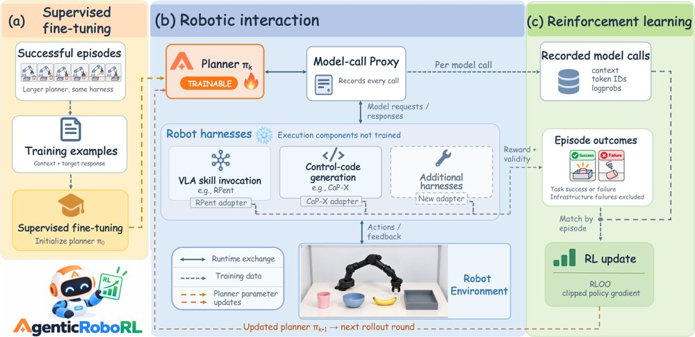
AgenticRoboRL 训练流程：成功轨迹转成 SFT 样本，规划器经机器人 harness 与环境交互并由代理记录模型调用，记录再与 episode 结果匹配用于 RL（排除基础设施失败），各 harness 专用适配器共享同一流程，且只训练规划器。
解决了什么问题。现有 agentic 机器人系统主要靠改进机器人 harness 和外部记忆来提升表现，规划器本身往往直接使用 Codex、Claude Code 等闭源强模型，其自身能力并未被训练。与此同时，编码智能体已通过后训练（监督微调加强化学习）大幅进步。问题是：这套后训练方法能否迁移到机器人规划器上，并兼容 VLA 技能调用与控制代码生成这两类截然不同的执行机制。
方法。AgenticRoboRL 把训练接口放在模型调用边界而非底层动作层：代理记录规划器每次请求的上下文、生成 token 与 rollout 概率，再由 harness 专用适配器把记录与 episode 结果（任务、初始状态、尝试序号、奖励、有效性标志）对齐。训练流程先用带记忆教师产生的成功轨迹做 SFT，再以任务成功为唯一终局奖励做多轮 RL，采用留一法组内优势和双裁剪 PPO，无 critic、无中间奖励。两阶段都只更新规划器，感知模块、VLA 执行器与运动控制器保持冻结。
关键结果。在 LIBERO-PRO 上，9B 规划器经 SFT 从 18.1% 提升到 65.1%，RL 后达到 71.0%，接近带外部记忆的 Codex（GPT-5.5）的 72.1%，并超过不带记忆的 27B 规划器（57.9%）和带记忆的 27B 教师（74.0% 以内差 3.0 个百分点）；800 个配对 episode 中，RL 相对 SFT 多解 121 个、少解 74 个（符号检验 p=0.001）。未额外训练的同一检查点在 LIBERO-Plus 上达 72.2%（原模型 19.2%，SFT 66.7%），逐实例比较净增 548 个成功 episode。换到生成控制代码的 CaP-X harness，成功率从 2.7% 升至 18.7%（SFT），再到 28.5%（RL），高于 27B 教师的 20.3%。RPent 的 RL 阶段共收集 2,304 个 episode、选取 26,052 条回复、执行 206 步优化。
为什么值得看。它说明提升机器人 agent 的表现可以不重训底层控制器，而是直接后训练规划器本身，并且同一套流程能跨不同 harness 复用，为开源模型替代闭源规划器提供了一条路径。
局限 / 存疑。全部实验都在 LIBERO 系列仿真基准上完成，仅验证了单一 9B 学生模型；CaP-X 上的绝对成功率仍只有 28.5%，Goal 与 Spatial 套件因教师仅在 60 个任务中的 26 个上成功而几乎无提升。提升主要来自 SFT，RL 增量有限，且与“带记忆教师”的对比属于系统级参照，无法单独隔离记忆监督的贡献。
AI 智能体 Agent / 自主智能
强化学习 RL & 序列决策
机器人 & 具身智能
alphaXiv · arXiv
期刊
Nature · The anatomy of a personal health agent
《Nature》刊文提出一种面向个人健康的智能体系统，采用多智能体框架协同数据科学分析、医学推理与健康指导，基于可穿戴设备与临床数据的纵向信息提供整体性健康支持。该工作强调跨模块协作在长期健康管理中的作用，为机器学习研究者在多智能体协同与真实健康数据建模方面提供了新思路。
Nature · Using AI to offer personalized health advice
《Nature》这篇简讯关注 AI 工具在医学中的应用日益增多，讨论未来可能出现哪些类型的个性化健康建议技术，以及这类工具应如何评估与测试。文章没有给出具体数据，重点在提出技术方向与验证框架的问题。对关注医疗机器学习落地的研究生来说，可作为了解评估议题的入口。